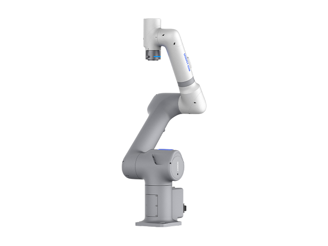
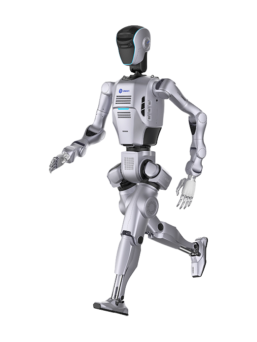
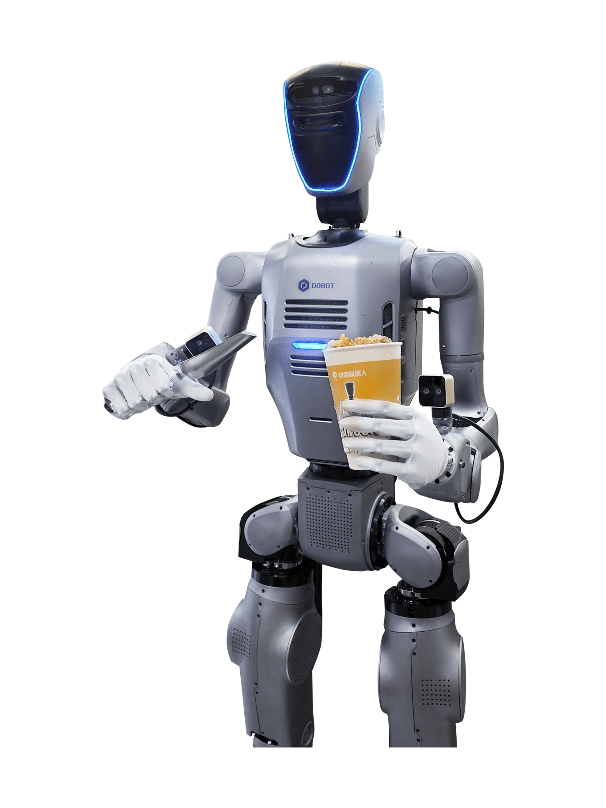
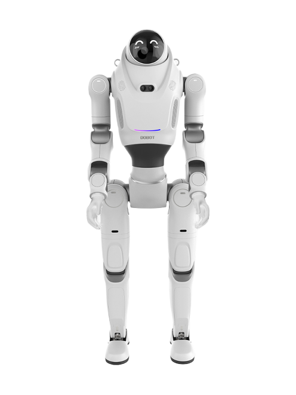

PULSA 7
A robot arm from China, announced 2026.
Sources retrieved: 9 November 2026 (A, B)
- Intended use, per the manufacturer
- Not stated
- Indicative price
- Not stated

Product render from the manufacturer's own website (dobot-robots.com).
Specifications
7 of 22 stated 15 not stated
15 fields hidden
How to read the figuresShow guideClose
- not statedNo source
- noStated by a source
- 0Reported as zero
- ASource
- A*Source with a caveat (select it)
- CERecords only what the manufacturer states regarding CE marking.
Select a source marker for source details and notes.
Performance3/5 disclosed
Physical1/5 disclosed
Mounting, power and communication2/4 disclosed
Sensing and autonomy0/2 disclosed
Commercial0/1 disclosed
Compliance & certifications1/5 disclosed
Against the field
Each strip holds every robot of this type in the guide that states the figure, one bar per group of values. Further right means a larger figure, not a better robot. A taller bar means more robots in that group.
Payload
7kg
50 robot arms state a payload
31 state a higher figure, 15 a lower one. 3 more state exactly the same figure.
Notes
Dobot launched the PULSA industrial cobot at the 26th China International Industry Fair in Shanghai and presented it at its Robotics Ecosystem Conference in Frankfurt on 20 October 2026.
The PULSA also comes as the PULSA 12, with a 12 kg payload, ±0.03 mm repeatability and a maximum J6 joint speed of 735°/s.
Sources
One line per source, not per figure: a source has one retrieval date.
- Adobot-robots.com/products/pulsa/pulsa.htmlMain source. Retrieved 9 November 2026
- Bdobot-robots.com/insights/news/dobot-unveils-three-new-products-at-its-2026-robotics-ecosystem-conference.htmlSecondary. Retrieved 9 November 2026
More robots
Same manufacturer

AtomDobotHumanoid

Atom MaxDobotHumanoid

LUMODobotHumanoid
- No photograph
VEGA 7Dobot